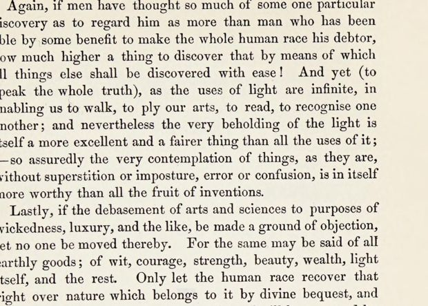

“The very beholding of the light” (Book I, aphorism 129)
English: Spedding’s translation, Works vol. IV, p. 115, scan. Highlighted: the sentence Lecky quotes in another translation.

Again, if men have thought so much of some one particular discovery as to regard him as more than man who has been able by some benefit to make the whole human race his debtor, how much higher a thing to discover that by means of which all things else shall be discovered with ease! And yet (to speak the whole truth), as the uses of light are infinite, in enabling us to walk, to ply our arts, to read, to recognise one another; and nevertheless the very beholding of the light is itself a more excellent and a fairer thing than all the uses of it;—so assuredly the very contemplation of things, as they are, without superstition or imposture, error or confusion, is in itself more worthy than all the fruit of inventions.
Lastly, if the debasement of arts and sciences to purposes of wickedness, luxury, and the like, be made a ground of objection, let no one be moved thereby. For the same may be said of all earthly goods; of wit, courage, strength, beauty, wealth, light itself, and the rest. Only let the human race recover that right over nature which belongs to it by divine bequest, and let power be given it; the exercise thereof will be governed by sound reason and true religion.
Lecky’s version: “And yet (to speak the whole truth), just as we are deeply indebted to light because it enables us to enter on our way, to exercise arts, to read, to distinguish one another, and nevertheless the sight of light is itself more excellent and beautiful than the manifold uses of it; so, assuredly, the very contemplation of things as they are, without superstition or imposture, without error or confusion, is in itself more worthy than all the produce of discoveries.”
Backlinks
Every place in Rationalism in Europe that links to this page (generated automatically when the site is built).
- Chapter IV, Part I: note 44